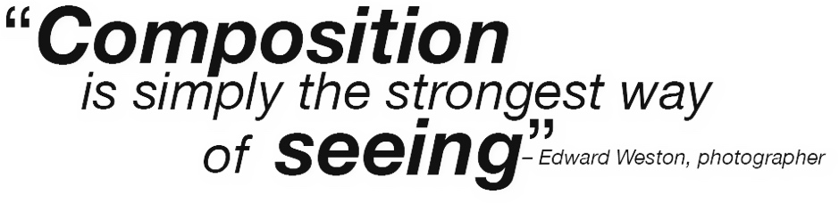

Composition is the art of arranging the elements in the frame so they make sense to the viewer and the photograph can be understood.
A good composition in a photograph is the best way of describing that subject in that situation.
The basics of composition only take a few minutes to learn but they can take a lifetime to master.

The basic concepts of composition in visual images are as old as the ancient Greeks. They understood the ideas of harmony, balance, and symmetry. These next few pages show explore the guidelines of The Essential Elements of Photographic Composition.
Simplify – reduce the elements in the image
• Pare the subject down to its essentials.
• Eliminate the extraneous.
• Swipe through the images here to see simple compositions in action (tap for full-screen).
Simplify
A day at the beach, using a low camera angle to eliminate everything but the sky, the sand and a happy bucket.
Rule of Thirds – impose an imaginary grid on your image
• Line intersections suggest places of center of interest.
• Horizontal lines suggest horizon placement.
• Vertical lines suggest placement for vertical elements
• Swipe over the image at right to see how the rule of thirds can act as a guide to where to place subjects in your photographs (tap for full-screen).
Rule of Thirds
Lines – create a path for the eye
• Can draw eye across the frame.
• “S” curves can create a serene feeling.
• Diagonals are more “active” elements.
• Foreground to background lines lead the viewer deeper into the picture.
• Swipe through the images at right to see how lines can guide the eye through photographs (tap for full-screen).
Lines
A snow-covered branch creates a tracery of lines.
Balance – the “weight” of image
• Symmetrical—equal weight on both sides creates a feeling of solidity.
• Asymmetrical—one side more weighted than the other creates a bit more tension because it’s more visually challenging to look at.
Symmetrical Balance
Asymmetrical Balance
Framing – The use of foreground objects or elements in your images can add emphasis and depth
• Look for elements in the scene that can frame your subject
• You may need to change camera position or focal length to use framing elements
Mergers – when foreground and background “collide”
• Learn to look at the 3-D world as if it is 2-D because the camera does
• Changing camera position usually solves a merger problem
The signs behind the subject’s head are distracting, but moving a few steps to the left eliminates the merger and creates a more pleasing image.
The last guideline: ignore the guidelines and break the rules
Often the best images come from “breaking the rules” but learning the rules first helps you to understand when to break them.